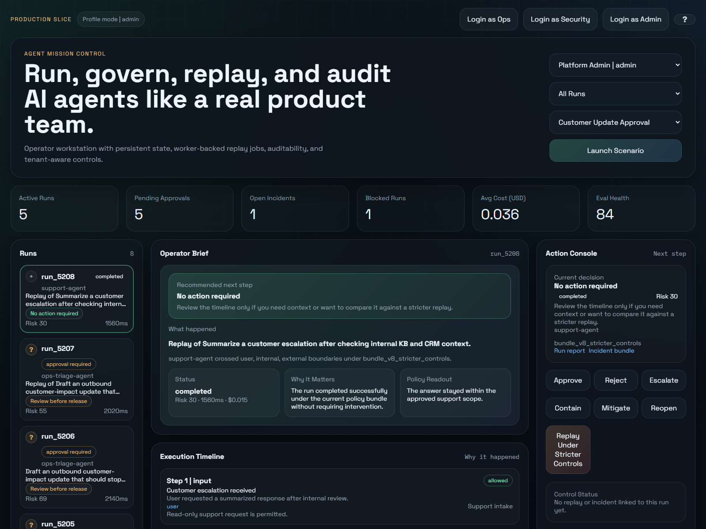
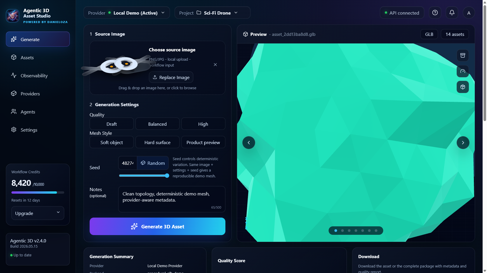

flagship public projects focused on RAG, agent governance, secure tool access, observability, and agent-ready workflow platforms
Python Backend Engineer
Production-oriented backend systems for AI runtimes, control, and review.
I build Python services around FastAPI, persistent runtime state, replay workflows, audit trails, operator tooling, business APIs, and practical control layers for AI systems.
backend-first profile with approvals, audit trails, replay jobs, policy surfaces, and operator tooling
practical AI systems work with persistence, review workflows, incident handling, and operational visibility
Selected Projects
Projects that actually prove the profile.
Agent Control Plane
Production-oriented FastAPI control plane for AI agents with persistent runtime state, worker-backed replay jobs, audit trail, operator notes, tenant-aware access, metrics, and a simplified operator review cockpit.

Agent Governance Gateway
Portfolio-grade FastAPI prototype for enterprise AI agent governance. It supports agent registration, human approval, short-lived scoped JWTs, revocation, multi-tenant isolation, PII redaction, policy-enforced tool access, audit logs, and an executive dashboard.
Open repositoryDanex RAG Service
Product-style hybrid RAG backend combining semantic retrieval with SQL-backed answers, ingestion, FAISS indexing, citations with scores, route transparency, query history, ingestion history, and evaluation signals.
Open repositoryMCP Security Gateway
Security-first FastAPI gateway for controlling agent access to MCP tools with auth, deterministic policy checks, approval routing, rate limiting, redacted audit logs, and incident creation for unsafe requests.
Open repositoryAI Workflow Observatory
Local-first observability dashboard for AI-assisted engineering workflows. It turns raw coding-session logs into workflow phases, verification quality, risk flags, cost visibility, project summaries, and session traces.
Open repositoryAutomation Control Plane
Backend-first control layer for automation workflows with tenant-aware access, approval queues, usage limits, execution audit logs, and operator review surfaces.
Open repositoryBrand Insight Engine
Feedback intelligence pipeline that turns public customer feedback and market signals into structured product, brand, and marketing insights.
Open repositoryAgentic 3D Asset Studio
Local-first AI workflow platform for 3D asset generation with provider abstraction, real GLB preview, metadata, quality reports, quality gates, run replay, observability, storage inspection, ZIP packages, and agent-ready API endpoints.

AgentOps Control Hub
Premium React and TypeScript product surface for AI agent governance, approval queues, secure tool access, audit logs, risk scoring, observability, and evaluation scorecards.
Open repositoryStack
What I actually use.
Python
FastAPI
SQL
PostgreSQL
SQLite
Docker
Git
Pytest
Redis
MCP
LangChain
FAISS
REST APIs
Bash
Primary direction
Python backend, API design, runtime control, operator workflows, automation, and testable business logic.
Secondary edge
Practical AI systems: control layers, retrieval-backed workflows, LLM-assisted tooling, internal operator products.
What I am not selling as
Backend-first systems profile. Not a generic fullstack pitch and not a pure data-science profile.
Timeline
Recent experience, without the noise.
Oct 2022 - Present
Independent Python/FastAPI backend and AI systems work: RAG services, agent workflows, secure tool access, observability, and operator-facing control planes.
Nov 2023 - Feb 2024
AI automation and business workflow prototypes, including Brand Insight Engine and Automation Control Plane.
Nov 2024 - Present
Internal operations platform work for appointments, invoices, reporting, Telegram-based workflows, exports, backups, and practical AI/OCR-assisted processing.
Best target roles
Systems Engineer, Backend Platform Engineer, Python Backend Engineer, AI Infrastructure Engineer.
Contact
Want the shortest path to the relevant proof?
The fastest way to evaluate me is through GitHub repositories and a short technical conversation around Python backend work, FastAPI services, MCP-aware systems, runtime governance, and practical AI integrations.
- Email: kontakt.danieldanek@gmail.com
- GitHub: github.com/danieloza
- LinkedIn: daniel-danek-aa3853231